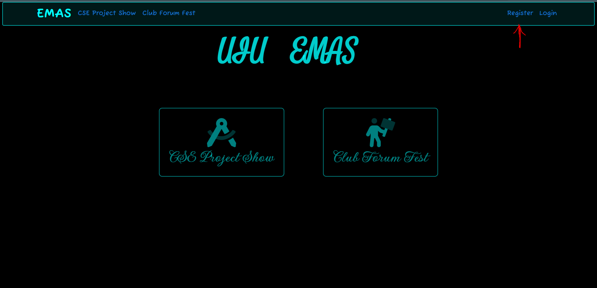
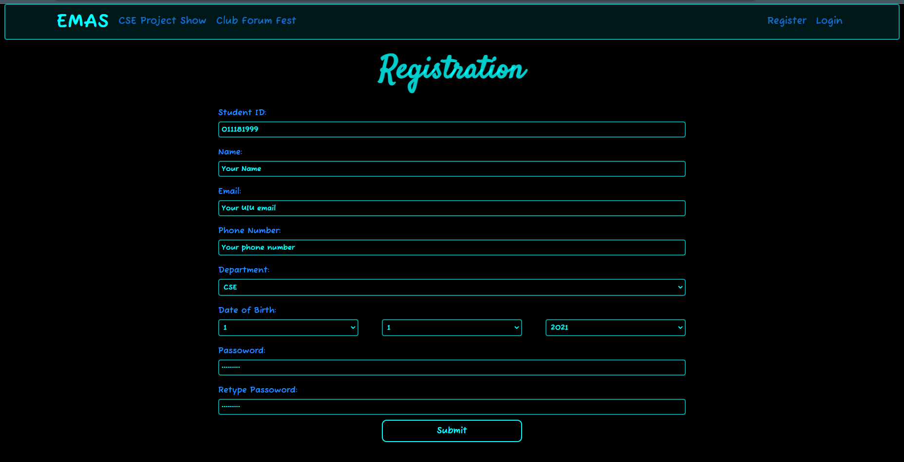
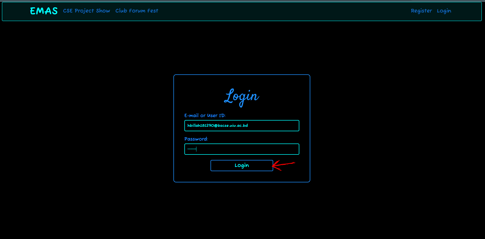
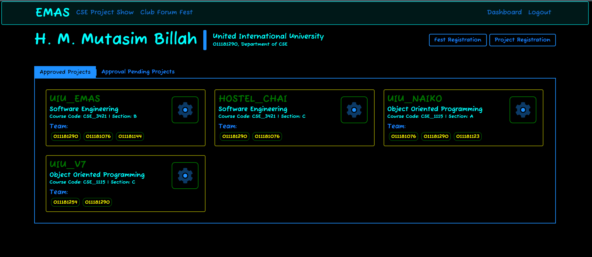
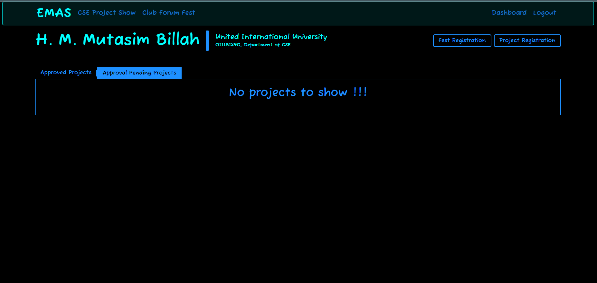
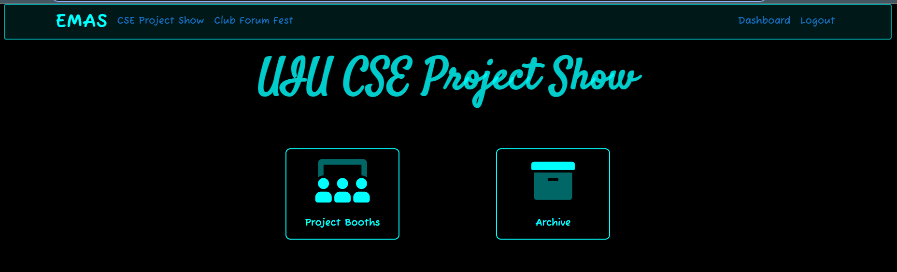
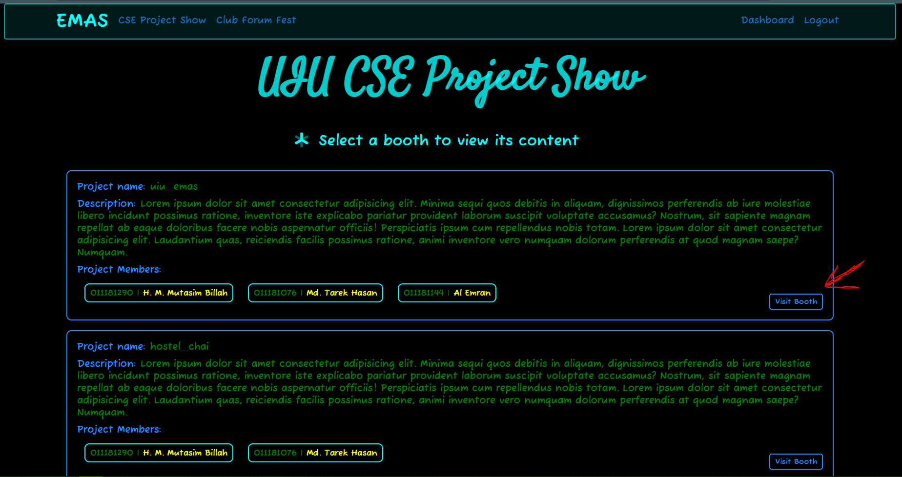
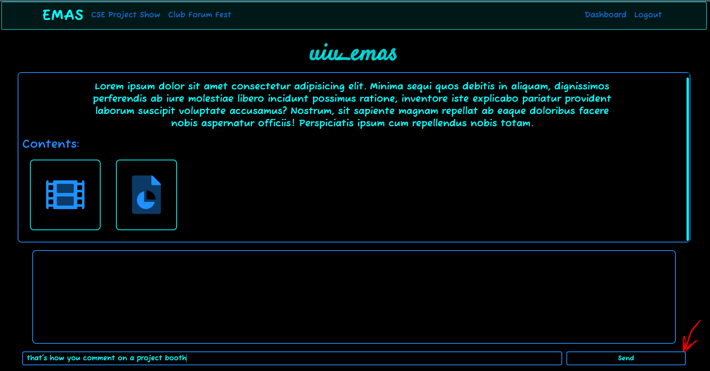

Visiting a CSE Project Booth
For commenting in project booth you must have to be an authenticated user. Let's go step by step.
Registering as a student
- Goto EMAS home page
- Click on
Register.
 - Fill up the registration form.
 - Click on
Submit.
Login
- If registration goes well you'll be redirected to Login page.
- Then put your Student ID or E-mail and Password.
- Click on
Login
 - You'll be redirected to your dashboard if you put your credentials properly
Dashboard
- In dashboard you'll be able to see the projects you are assigned in.
 - from your dashboard you can register for UIU Club Forum Fest by clicking
Fest Registration
and also you register a new project by clicking onProject Registration - In dashboard you can see 2 tabs one is
Approved Projectsand the other one isApproval Pending Projects - In
Approved Projectstab you can see the projects which are approved for CSE Project Show. - And by clicking on
Approval Pending Projectsyou can see the projects which are not approved yet. - As you can see in the following image. The user H.M. Mutasim Billah has no projects which are pending
.for approval. 
Project Booth Explorer
- Click on
CSE Project Showform the navbar. You wil see a page like follwing  - Click on
Project Booth. - You will be able see the courses and the project count for the course.
- Select a course then you will see the list of all project of that course.
- Click on
Visit Booth.

Commenting
- You will see the contents of that project and a comment box with a placeholder like comment anything ....
- write something on that comment box and click on
Sendor hitEnter.
 - So. that's how you make comment on a project booth.
- You can also watch the demo video by clicking on the film icon in the contents section
or you can download the project report form there.